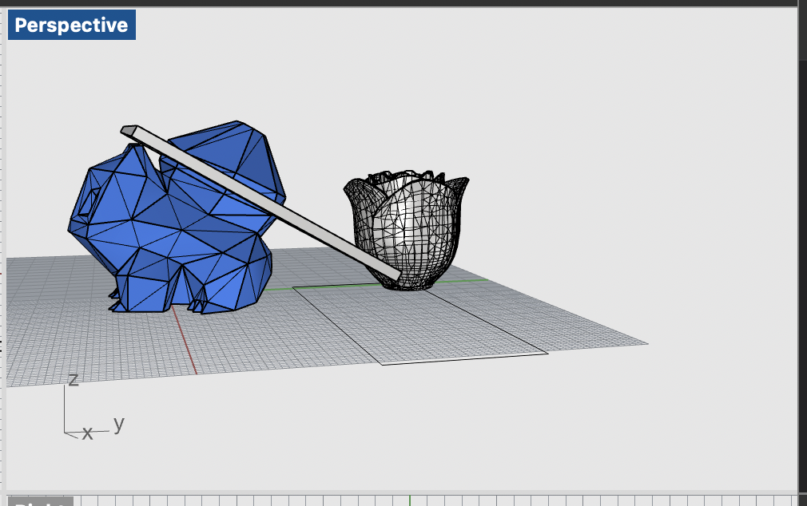
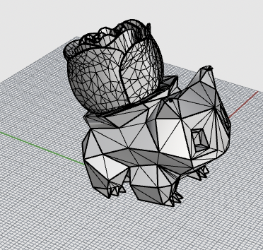
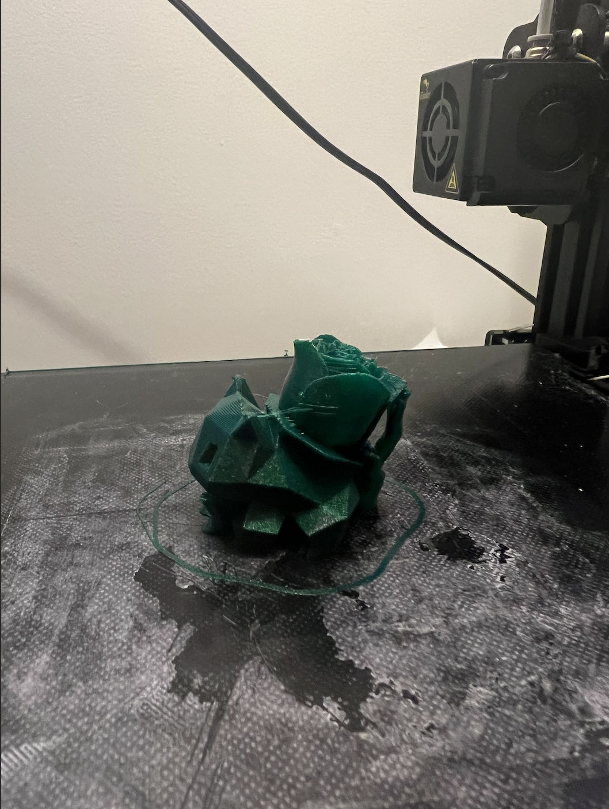
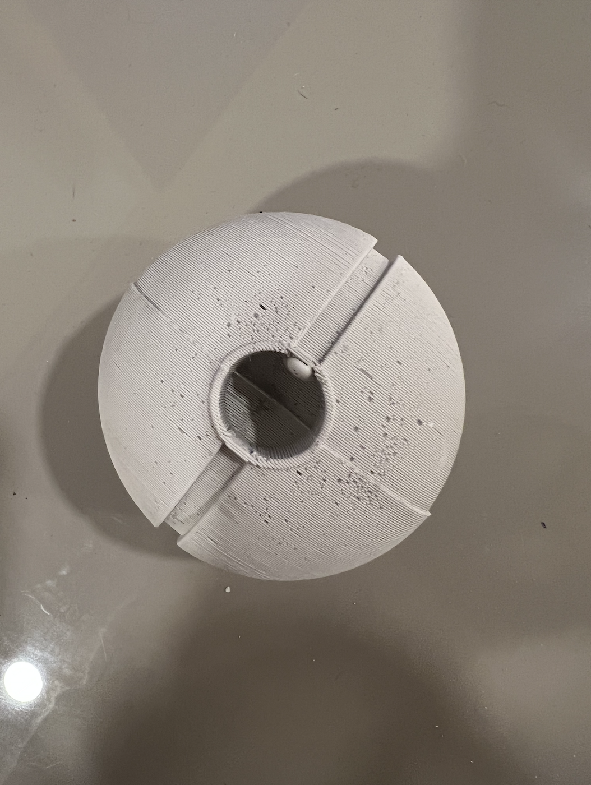
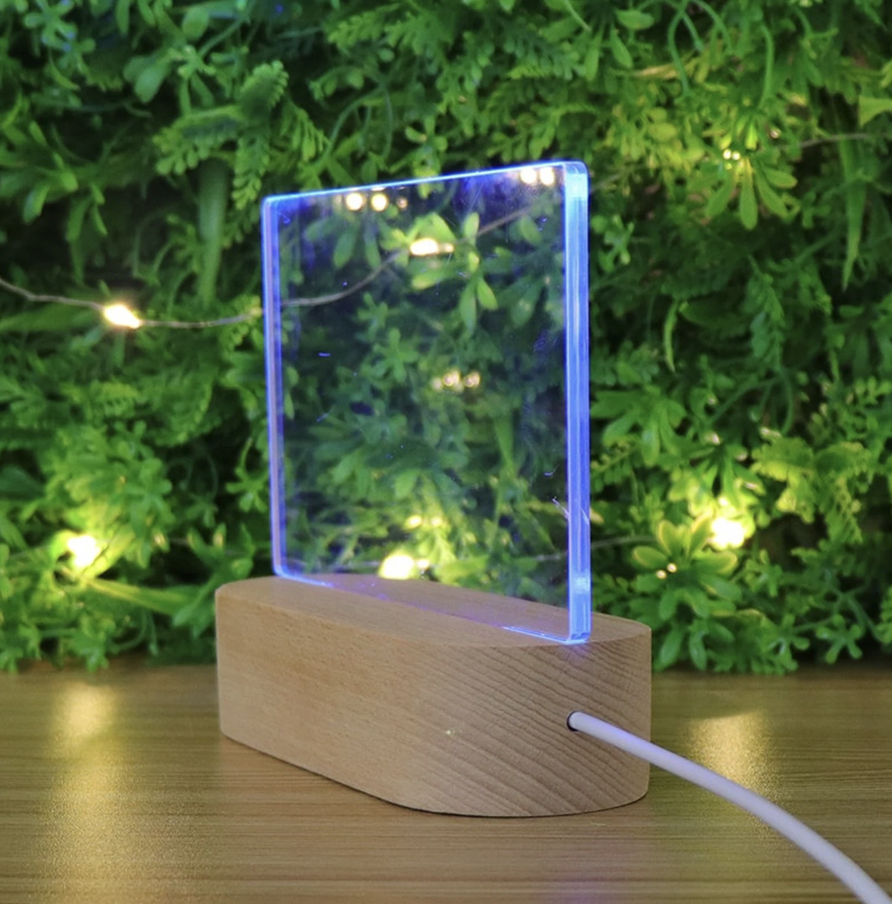
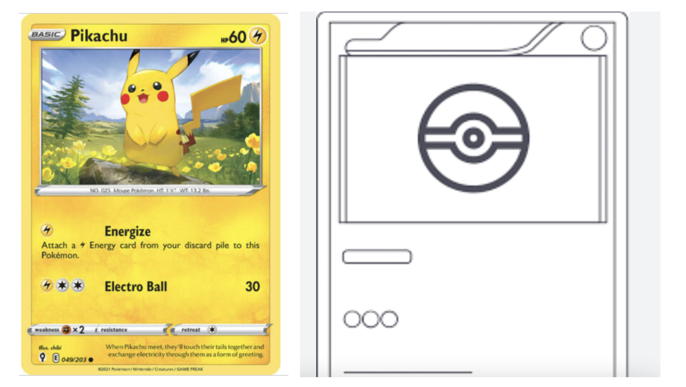

Ultimate Pokemon Starter Set: A starter set for the Pokemon enthusiast with a bit of flair! Great for office, bedroom, or game room displays!
Have all that you need to get a taste of the Pokemon world with the starter Pokemon (custom modified), a Pokeball (a representative object of your Pokemon’s home), and Pokemon cards to understand the traits and skills of your starter Pokemon.
Includes 3 parts:
Pokemon details:
The Pokemon include mesh edited additional objects like the rose on bulbasaur.



Pokeball details:
Pokeball is finished with sanding and paint. Grasshopper-designed stand will fit into the hole at the bottom of Pokeball.

Pokemon card details:
Pokemon card is inspired by existing glass/aryclic decorative pieces.

Pokemon card details will be rastered onto the arcylic and illuminated by LEDs in the 3D printed base.

| Tasks |
Target Dates |
Parts |
Contingencies |
Pokemon:
- Order relevant PLA colors
- Download starter Pokemon STLs (Squirtle, Bulbasaur, Charmander) + Pikachu from Thingiverse
- Download meshes (STLs) from Thingiverse (or other relevant site) on objects to be merged with starter Pokemon
- Initial list:
- Bulbasaur -> Rose
- Charmander -> Fire
- Squirtle -> Sunglasses
- Pikachu -> Lightning Bolt
- Rhino mesh editing, ensure scale and closed meshes -> export new STLs
- Go to Cura and determine print settings (will likely need tree supports)
- Load relevant PLA color and 3D print!
|
Finish by 11/26 |
- PLA:
- Green
- Yellow
- Red or Orange
- Blue
- Pokemon STLs
- Other object components for Pokemon STLs
|
- If issues arise in 3D printing a particular Pokemon and/or mesh-edited version of the Pokemon, I will proceed to print normal Pokemon, or a fewer number of Pokemon as I will have already demonstrated Rhino skills with the Pokeball.
- If issues arise with a particular mesh, other STLs or slightly different object choices to be merged with the starter Pokemon may be chosen (e.g. glasses instead of sunglasses, succulent instead of rose, etc.)
- If issues with a specific color of PLA, I will use a different roll/color. It will be slightly sad the Pokemon isn’t quite perfect, but we’ll love them anyway.
|
Pokeball:
- Download Pokeball STL from Thingiverse
- Make a 2 part mold for mold in Rhino with direct modeling/mesh operations (ensure to design keys, sprue, and any needed vents)
- 3D print the mold for mold
- Use ‘oomoo’ to create the mold
- Cast with ‘Perfect Cast’/hydrostone within the ‘oomoo’ mold
- Sand Pokeball
- Paint Pokeball
- Design stand for Pokeball in Rhino with Grasshopper (fits in hole in bottom of Pokeball)
- 3D print Pokeball stand
|
Finish by 11/25 |
- Oomoo and Perfect Cast
- Painting supplies:
- Red, white, black paint
- Brushes
- Sealant
- Sandpaper
- Pokeball STL
- PLA
|
- Originally I was thinking of making multiple Pokeballs, but given the limited supply of casting material and time paint takes to set, I will only be making 1 Pokeball for this starter set.
|
Pokemon cards (stretch goal):
- Order relevant materials: acrylic, LEDs
- Download pngs/vectors/curves of Pokemon cards for each Pokemon and edit in Illustrator
- Go to the MILL or the 8 to laser cut the acrylic sheets into card sizes and engrave/raster the vectors of the Pokemon card information
- Measure pokemon cards and LEDs and design a stand in Rhino (direct or Grasshopper) to design a slide fit stand
- Change LED color to match the pokemon on each card and assemble
|
Finish by 12/4 |
- 4 inch LED mini-programmable strips
- Acrylic sheets
- Pokemon card vectors
- PLA
|
- In concept and MILL access/machine reliability, I have enough techniques (4) without the Pokemon cards. So if issues arise in the machine at the MILL or in design, I will cut or cut back on the Pokemon cards.
- If issues arise specifically with the LED stock parts and not machine access or laser cutting, I will remove them as I will still have enough techniques (5)
- If issues in acquiring/cutting acrylic, I will switch to a different material such as wood or cardboard and cut the LED stock parts.
- If still wanting to deliver Pokemon cards and issue with parts/laser cutting/design, I will consider 3D printing a Pokemon card if there is enough time.
- If issues arise specifically with Pokemon card vectors, I will raster just a vector of image of each Pokemon.
|
Peer teachers: Jessica Douma for thinking of clear acryclic rather than wood for Pokemon cards and inspiring me with table layout for final proposal.
Moral support: Jessica Douma
Teaching support: TA Junchao
Again the link to all documents if not wanting to scroll up :P :